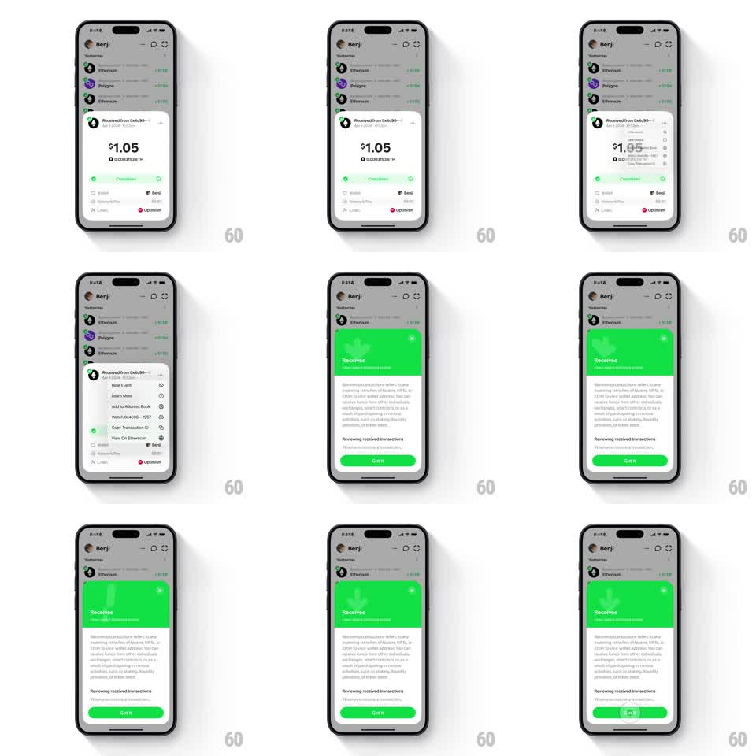

Media
Frame-by-frame

Rebuild this interaction 1:1: Family's transaction sheet morph - tapping the action menu on a transaction detail sheet ("Received from 0x1c96...", $1.05, Completed) morphs it seamlessly into an educational sheet with a bright green "Receives" header ("Reviewing received transactions", "Got it" button), the sheet body crossfading while the sheet frame stays pinned.

Rebuild this interaction 1:1: Family's transaction sheet morph - tapping the action menu on a transaction detail sheet ("Received from 0x1c96...", $1.05, Completed) morphs it seamlessly into an educational sheet with a bright green "Receives" header ("Reviewing received transactions", "Got it" button), the sheet body crossfading while the sheet frame stays pinned.
## Integration
Integration: stack-agnostic spec - springs given as stiffness/damping, timed motions as duration + curve; map every value to your framework and animation library of choice.
## Scene
Wallet screen ("Benji" header, token list: Ethereum, Polygon). The detail sheet: "Received from 0x1c96...", "$1.05", "0.0003153 ETH", a Completed status row, From/Network fee/Chain (Optimism) rows, and an action menu (Hide Txn, Learn More, Add to Address Book, Watch 0x4c96..., Copy Transaction ID, View on Etherscan). The educational sheet: bright green header with a download-arrow glyph, "Receives" title, explainer paragraphs, and a green "Got it" button.
## Motion spec
Pattern: sheet-content morph with springy header swap.
- Tap Learn More: the action menu collapses row by row upward (40ms stagger, 150ms each) as the sheet's content crossfades (200ms).
- The green header slides in from the top of the sheet (translateY -30pt -> 0, spring ~320/18) while the sheet grows to its new height (250ms, height animating with the content swap).
- The explainer paragraphs fade up in stagger (60ms apart, translateY 8pt -> 0).
- "Got it" slides in last (200ms); tapping it reverses the morph back to the transaction detail (or dismisses the sheet, 250ms slide down).
## Calibration
- The sheet frame (grabber, corner radius, scrim) never jumps - only its contents and height change.
- The green header is a hard brand moment: full-bleed saturated green inside the sheet.
## Reduced motion
Contents crossfade (200ms) without staggers or height spring.
## Don't miss
- The download-arrow glyph in the green header bounces once on arrival (translateY -6pt -> 0, spring ~340/14).
- The transaction's status dot stays green in both sheets' vocabulary.